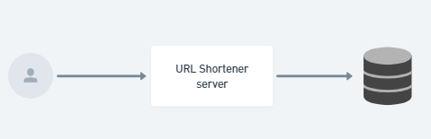

url-shortener
About
URL Shortener is a backend application that provides a URL shortening service.
Stack
- NodeJS: 20.x
- NestJs: ^10.0.0
- TypeOrm: ^0.3.20
- PostgreSQL: ^8.12.0
Features
- URL shortening
- Click count on shortened URLs
How to Run the Project
Prerequisites
Environment variables
Example :APP_PORT=3001
API_DOMAIN=http://localhost
DATABASE_HOST=
DATABASE_PORT=5432
DATABASE_NAME=
DATABASE_USER=
DATABASE_PASSWORD=
DATABASE_SCHEMA=publicWhen using docker-compose, put
db-pgin DATABASE_HOST
Run in Docker
- Clone:Example :
git clone https://github.com/jonlima/url-shortener.git - Install the dependencies:Example :
npm install - Run:Example :
npm run start:docker
[!NOTE]
When running in start:docker mode, the application will execute the migrations and create the tables, so don't worry about the database.
Routes
URLs Module
| Route | Method | Request Body | Response Body | Headers |
|---|---|---|---|---|
/ |
POST |
{ "originalUrl": "string" } |
{ "id": "number", "shortUrl": "string" } |
None |
/:hash |
GET |
None | Redirect to original URL | None |
Documentation
How to access and generate project documentation (Swagger and Compodoc).
- Access the API documentation (Swagger) at:
/docor/doc/json - Online access here
Compodoc:
Run
Example :npm run compodoc[!NOTE]
The generated documentation will be saved in the
docsfolder